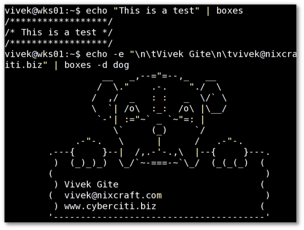

编译自：http://www.cyberciti.biz/tips/unix-linux-draw-any-kind-of-boxes-around-text-editor.html
作者： Vivek Gite
原创：LCTT https://linux.cn/article-7401-1.html
译者： zky001
本文地址：https://linux.cn/article-7401-1.html
boxes 命令不仅是一个文本过滤器，同时是一个很少人知道的有趣工具，它可以在输入的文本或者代码周围框上各种ASCII 艺术画。你可以用它快速创建邮件签名，或者在各种编程语言中留下评论块。这个命令可以在 vim 文本编辑器中使用，但是也可以在各种支持过滤器的文本编辑器中使用，同时也可以在命令行中单独使用。
使用 apt-get 命令 在 Debian / Ubuntu Linux 中安装 boxes：
$ sudo apt-get install boxes
输出示例：
Reading package lists... Done
Building dependency tree
Reading state information... Done
The following NEW packages will be installed:
boxes
0 upgraded, 1 newly installed, 0 to remove and 6 not upgraded.
Need to get 0 B/59.8 kB of archives.
After this operation, 205 kB of additional disk space will be used.
Selecting previously deselected package boxes.
(Reading database ... 224284 files and directories currently installed.)
Unpacking boxes (from .../boxes_1.0.1a-2.3_amd64.deb) ...
Processing triggers for man-db ...
Setting up boxes (1.0.1a-2.3) ...
RHEL / CentOS / Fedora Linux 用户, 使用 yum 命令来安装 boxes，(请先启用 EPEL 软件仓库)：
# yum install boxes
输出示例：
Loaded plugins: rhnplugin
Setting up Install Process
Resolving Dependencies
There are unfinished transactions remaining. You might consider running yum-complete-transaction first to finish them.
--> Running transaction check
---> Package boxes.x86_64 0:1.1-8.el6 will be installed
--> Finished Dependency Resolution
Dependencies Resolved
==========================================================================
Package Arch Version Repository Size
==========================================================================
Installing:
boxes x86_64 1.1-8.el6 epel 64 k
Transaction Summary
==========================================================================
Install 1 Package(s)
Total download size: 64 k
Installed size: 151 k
Is this ok [y/N]: y
Downloading Packages:
boxes-1.1-8.el6.x86_64.rpm | 64 kB 00:00
Running rpm_check_debug
Running Transaction Test
Transaction Test Succeeded
Running Transaction
Installing : boxes-1.1-8.el6.x86_64 1/1
Installed:
boxes.x86_64 0:1.1-8.el6
Complete!
FreeBSD 用户可以按如下使用：
cd /usr/ports/misc/boxes/ && make install clean
或者，使用 pkg_add 命令来增加包：
# pkg_add -r boxes
输入下列命令：
echo "This is a test" | boxes
或者，指定要使用的图案的名字：
echo -e "\n\tVivek Gite\n\tvivek@nixcraft.com\n\twww.cyberciti.biz" | boxes -d dog
输出示例 :

*图01: Unix / Linux: Boxes 命令来画出各式各样的图案 *
语法如下：
boxes option
pipe | boxes options
echo "text" | boxes -d foo
boxes -l
-d 选项用来设置要使用的图案的名字。语法如下：
echo "Text" | boxes -d design
pipe | boxes -d desig
-l 选项列出所有图案。它显示了在配置文件中的所有的框线设计图，同时也显示关于其创作者的信息。
boxes -l
boxes -l | more
boxes -l | less
输出示例：
43 Available Styles in "/etc/boxes/boxes-config":
-------------------------------------------------
ada-box (Neil Bird ):
---------------
-- --
-- --
---------------
ada-cmt (Neil Bird ):
--
-- regular Ada
-- comments
--
boy (Joan G. Stark ):
.-"""-.
/ .===. \
\/ 6 6 \/
( \___/ )
_________ooo__\_____/______________
/ \
| joan stark spunk1111@juno.com |
| VISIT MY ASCII ART GALLERY: |
| http://www.geocities.com/SoHo/7373/ |
\_______________________ooo_________/ jgs
| | |
|_ | _|
| | |
|__|__|
/-'Y'-\
(__/ \__)
....
...
output truncated
..
你可以在 vi 或 vim 中使用任何外部命令，比如在这个例子中，插入当前日期和时间，输入：
!!date
或者
:r !date
你需要在 vim 中输入以上命令来读取 date 命令的输出，这将在当前行后面加入日期和时分秒：
Tue Jun 12 00:05:38 IST 2012
你可以用 boxes 命令做到同样的功能。如下创建一个作为示例的 shell 脚本或者c程序：
#!/bin/bash
Purpose: Backup mysql database to remote server.
Author: Vivek Gite
Last updated on: Tue Jun, 12 2012
现在输入如下（将光标移到第二行，也就是以“Purpose: ...”开头的行）
3!!boxes
瞧，你就会看到如下的输出 :
#!/bin/bash
/****************************************************/
/* Purpose: Backup mysql database to remote server. */
/* Author: Vivek Gite */
/* Last updated on: Tue Jun, 12 2012 */
/****************************************************/
这个短片将会给你介绍boxes命令:
参见
via: http://www.cyberciti.biz/tips/unix-linux-draw-any-kind-of-boxes-around-text-editor.html
编译自：http://www.cyberciti.biz/tips/unix-linux-draw-any-kind-of-boxes-around-text-editor.html
作者： Vivek Gite
原创：LCTT https://linux.cn/article-7401-1.html
译者： zky001
本文由 LCTT 原创翻译，Linux中国首发。也想加入译者行列，为开源做一些自己的贡献么？欢迎加入 LCTT！
翻译工作和译文发表仅用于学习和交流目的，翻译工作遵照 CC-BY-NC-SA 协议规定，如果我们的工作有侵犯到您的权益，请及时联系我们。
欢迎遵照 CC-BY-NC-SA 协议规定转载，敬请在正文中标注并保留原文/译文链接和作者/译者等信息。
文章仅代表作者的知识和看法，如有不同观点，请楼下排队吐槽 :D
Linux.CN © 2003-2016 Linux中国 | Powered by DX | 图片存储于七牛云
京ICP备05083684号-1 京公网安备110105001595
服务条款 | 除特别申明外，本站原创内容版权遵循 CC-BY-NC-SA 协议规定


分享到微信朋友圈
打开微信，点击底部的“发现”，
使用“扫一扫”将网页分享至朋友圈。